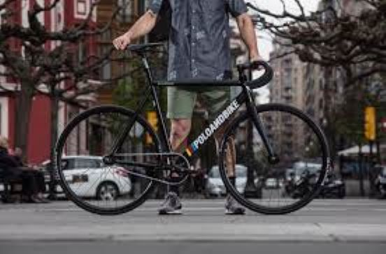

Poloandbike
- This is my bike that I use to ride around the city in
- It costed about $500 in 2019
- I bought it because it was a good deal since it had high quality parts
- I'm still using this bike and it is still in good condition
Modifications
- Crankset upgrade: went from the stock crankset to Omniums which costed me $100 since I bought it used
- Front tire: Went from thickslicks in the front to gatorskins which has better grip and lasts longer
- Stickers: My friend printed a sticker that says Bridgeport and I stuck it on the toptube
Track Bike Parts
- Handlebars: The part the part of the bike where you put your hands on
- Headset: Makes the handlebars turn
- Stem: connects headset to handlebars
- Framset: The frame of the bike including the fork
- Crankset: Rotates and turns the big gear on the bike using the chain
- Wheels: the rims, inner tube, and tires
- Seatpost + seat: Goes in the framset and holds the seat
How to break without using breaks
*There are many creative ways to break, but here are some of the foundational ones*
- Skidding: Locking tires by leaning forward and pushing with one foot while pulling with the other
- Bunny Hop: Pushing with one foot and pushing with the other which should pop the back tire up
- Foot Jam: Shoving foot into the part between the back tire and the seatpost which will lock up the tire
- Back Pedal: Pushing back on the pedals counter clockwise